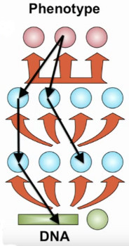

An Overview of Probabilistic Latent Variable Models with an Application to the Deep Unsupervised Learning of Chromatin States
Rick Farouni
April 3, 2017
A unifying overview of latent variable models (LVMs) from a probabilistic perpsective
- Present an overview of the probabilistic modeling approach to formulating LVMs.
- Show how LVMs can be constructed from most basic assumptions.
- Show how several examples of LVMs such as PCA, FA, ICA, CCA, SEM, and DGLM are related to each other.
Application of a Deep Latent Gaussian Model to functional epigenomics data
- Provide a proof of concept for applying an implicit, deep, highly nonlinear, and generative latent variable model to the unsupervised learning of a continous representation of the histone code.
- Learn a compressed two-dimensional latent representation as defined by the two hidden factors of variation that are most salient in the high-dimensional data.
- Give a biological interpertation of the learned latent manifold in terms of a combinatorial code of histone modifications.
Main Ideas
Algebraic Perspective
Regression Example
\(N\) data points \((\mathbf{X},\mathbf{Y})=\{(\mathbf{x}_n, {\mathbf{y}}_n)\}\) \(\mathbf{x}_n\in\mathbb{R}^{M}\); \({\mathbf{y}}_n\in\mathbb{R}^{P}\)\[\epsilon_{np} \sim \mathcal{N}_p(0,\, \sigma^2_p)\\ y_{np} ={\boldsymbol{\beta}}^T_{p}{\mathbf{x}}_n + \epsilon_{np}\\ n=1, \cdots, N; \quad p=1, \cdots, P \]
Probabilistic Perspective
\[
p({\mathbf{y}}_1,\cdots, {\mathbf{y}}_N, {\mathbf{x}}_1,\cdots, {\mathbf{x}}_N, \theta)\\
=\prod_{n=1}^Np({\mathbf{y}}_n \mid {\mathbf{x}}_n, \theta^{Y})\prod_{n=1}^N p( {\mathbf{x}}_n \mid \theta^{X}) p(\theta^{Y}) p(\theta^X) \\
=\prod_{n=1}^N {\mathcal{N}}_p( {\mathbf{y}}_{n} \mid {\mathbf{B}}{\mathbf{x}}_n, \ {\boldsymbol{\Sigma}}) p({\mathbf{B}},{\boldsymbol{\Sigma}})\prod_{n=1}^N\ p({\mathbf{x}}_n\mid \theta^{X})p(\theta^{X})
\]
What is a Latent Variable?
What is a Latent Variable Model?
\[ {\mathbf{Y}}\in \mathbb{R}^{N \times P }; {\mathbf{y}}_n \in \mathbb{R}^{P}; {\mathbf{z}}_n \in \mathbb{R}^{D}; {\boldsymbol{\theta}}\in \mathbb{R}^{M}\\ p({\mathbf{y}}_1,\cdots,{\mathbf{y}}_N,{\mathbf{z}}_1,\cdots,{\mathbf{z}}_N,{\boldsymbol{\theta}}) = p({\boldsymbol{\theta}})\prod_{n=1}^N\ p({\mathbf{y}}_n\mid{\mathbf{z}}_n,{\boldsymbol{\theta}})p({\mathbf{z}}_n\mid{\boldsymbol{\theta}})\]Examples of Common Latent Variable Models
Principle Component Analysis (PCA)
\[ \prod_{n=1}^N {\mathcal{N}}_p( {\mathbf{y}}_n \mid {\mathbf{W}}{\mathbf{z}}_n, \ \sigma^2\mathbf{I}) \mathcal{N}_d({\mathbf{z}}_n \mid \boldsymbol{0},\,\mathbf{I}) \]
As a generative model
\[ {\mathbf{z}}_n\ \sim\ \mathcal{N}_d(\boldsymbol{0},\,\mathbf{I}) \quad n=1,\cdots,N \\ {\mathbf{y}}_n \mid {\mathbf{z}}_n \sim\ \mathcal{N}_p({\mathbf{W}}{\mathbf{z}}_n,\, \sigma^2\mathbf{I}) \]
Tipping and Bishop (1999)
Factor Analysis (FA)
\[ \prod_{n=1}^N {\mathcal{N}}_p( {\mathbf{y}}_n \mid {\mathbf{W}}{\mathbf{z}}_n, \ \operatorname{Diag}(\sigma^2)) \mathcal{N}_d({\mathbf{z}}_n \mid \boldsymbol{0},\,\mathbf{I}) \]
As a generative model
\[ {\mathbf{z}}_n\ \sim\ \mathcal{N}_d(\boldsymbol{0},\,\mathbf{I}) \quad n=1,\cdots,N \\ {\mathbf{y}}_n \mid {\mathbf{z}}_n \sim\ \mathcal{N}_p({\mathbf{W}}{\mathbf{z}}_n,\,\operatorname{Diag}(\sigma^2) ) \]
The Variational Autoencoder (VAE): Generative Model
\[\mathbf{z}_n\ \sim\ \mathcal{N}_d(\boldsymbol{0},\, \mathbf{I}) \quad n=1, \cdots,N\\ {\mathbf{y}}_n \mid {\mathbf{z}}_n \sim\ \mathcal{N}_p(\mathbf{NN}_{\mu}({\mathbf{z}}_n;{\boldsymbol{\theta}}),\, \mathbf{NN}_{\sigma}(\mathbf{z}_n;{\boldsymbol{\theta}}))) \]
\[ \textit{where } \quad \mathbf{NN}({\mathbf{z}};\theta) = h_K \circ h_{K-1} \circ \ldots \circ h_0(\mathbf{z}) \\ \quad h_k({\mathbf{z}}) = \sigma_k(\mathbf{W}^{(k)} {\mathbf{z}}+\mathbf{b}^{(k)})\\ {\boldsymbol{\theta}}= \{ (\mathbf{W}^{(k)}, \mathbf{b}^{(k)}) \}_{k=0}^K\\ \textit{is a function parameterized by a deep neural network} \]
Kingma and Welling (2013)
Variational Approximation
Since the true posterior is intractable \[p_\theta(\mathbf{z}_n \mid \mathbf{y}_n) = \frac{p({\mathbf{y}}_n \mid {\mathbf{z}}_n)p({\mathbf{z}}_n)}{p({\mathbf{y}}_n)}\\\]
We introduce an approximate posterior distribution \[q(\mathbf{z}_n \mid \mathbf{y}_n;{\boldsymbol{\nu}})\]
VAE: Inference Model
\[q(\mathbf{z}_n \mid \mathbf{y}_n;{\boldsymbol{\nu}}) = \mathcal{N}_d\big({\mathbf{z}}_n \mid \mathbf{NN}_{\mu}({\mathbf{y}}_n;{\boldsymbol{\nu}}),\, \mathbf{NN}_{\sigma}({\mathbf{y}}_n;{\boldsymbol{\nu}})\big) \\\]
And minimize Kullback–Leibler divergence between the approximate posterior and the true posterior


Application of a Deep Latent Variable Model to the Unsupervised Learning of Chromatin States
Effects of histone modification marks on gene regulation
Data
- A total of 100 ENCODE epigenomic datasets were used
- 10 ChIP-seq datasets (genome-wide signal coverage)
- 10 ENCODE cell types
Epigenomic Marks
Cell Types
An Observation as an Image
Inference
- Tensorflow via Python API
- Training Data:
- All except Chromosomes 1, 8, and 21
- Sample Size: 11,748,445
- Dimensionality: 90
- Validation Split: 80% Training, 20% Validation
- Test Data
- Chromosomes 1, 8, and 21
- Sample Size: 1,946,177 Observations
Examining the Inference model
\[ q_\nu(\mathbf{z}_n \mid \mathbf{y}_n;{\boldsymbol{\nu}}) = \mathcal{N}_2\big({\mathbf{z}}_n \mid \mathbf{NN}_{\mu}({\mathbf{y}}_n;{\boldsymbol{\nu}}),\, \mathbf{NN}_{\sigma}({\mathbf{y}}_n;{\boldsymbol{\nu}})\big) \]
MNIST Digits
Projected Data MNIST Digits
MNIST Latent 2-D Manifold
Projection of Validation Data onto Latent Space
Projection of Test Data onto Latent Space

Functional Annotations
- FANTOM5 Atlas of Active Enhancers (43,011 regions)
- CpG islands (52,502 regions)
- GENCODE Version 19 Gene Annotations: Promoters
Projected Validation Data (Labeled Subset)
Projected Test Data (Labeled Subset)
Examining the generative model
\[\mathbf{z}_n\ \sim\ \mathcal{N}_2(\boldsymbol{0},\, \mathbf{I}) \quad n=1, \cdots,N\\ {\mathbf{y}}_n \mid {\mathbf{z}}_n \sim \operatorname{Bernoulli} \Big(p=\mathbf{NN}({\mathbf{z}}_n;{\boldsymbol{\theta}})\Big)\\ \]
Implicit Models

Visualizing the Learned 2-D Manifold
Visualizing the Learned 2-D Manifold
Model Checking

Scientific significance and relevance of the approach
Histone Code model
- Histone modifications –> chromatin structure –> gene expression
- Only a few histone marks combinations have a functional role
Existing approaches
- Discrete Histone code
- Functionally important histone combinations (i.e. chromatin states) define regulatory elements and functionally annotate the human genome
- Chromatin states learned are cell-type specific
Current approach
- Histone code continuous but can also be discretized
- Extensive across cell-types
Statistical significance and relevance of the approach
Existing approaches
- Explicit, shallow, linear
- Not scalable
- Many are not generative
- Supervised methods can be trained only on a very small subset of data
Current Approach
- Implicit, deep, highly nonlinear, generative, unsupervised model
- Very scalable and flexible
- Model checking by sampling
- Learns compact representations and extracts the factors of variation that govern the data
Future Goals
- Extend the approach to the problem of semi-unsupervised learning
- Identify the cell-specific functional role of particular regulatory regions (e.g. enhancers)
Global patterns across cell-types
- Lower right quadrant: H3k27ac, H3k4me2, H3k4me3, and H3k9ac (Columns 2, 6, 7, 8) drive variation
- Left hand side: H3k27me3 and H3k36me3 (Columns 3 and 4) drive variation
- Upper left and lower left quadrants: highH3k36me3 drive variation right to left
- Top to bottom: very small H3k27me3 dominates
Local patterns
- The lower right corner: the H1-hESC and HepG2 cells (Rows 3 and 5)
- HepG2: H3k27me3 is high
- H1-hESC: H3k27ac is low
Thank You!
“Information has its own architecture. Each data source, whether imagery, sound, text, has an inner architecture which we should attempt to discover.” - David Donoho, Plenary Address at ICM 2012
Extra
Class of Latent Variable Models
- Matrix factorization models (e.g. PCA, Factor Analysis)
- Multilevel regression models (e.g. random effects model)
- Time series models (e.g. Hidden Markov Model)
- Dirichlet process mixture models
- Deep latent variable models (e.g. VAE)
- And others …
Multivariate Models
\[p({\mathbf{y}}_1,\cdots, {\mathbf{y}}_N, {\mathbf{x}}_1,\cdots, {\mathbf{x}}_N, \theta)\]
\[\prod_{n=1}^Np({\mathbf{y}}_n \mid f_{\theta}({\mathbf{x}}_n),\theta^{Y})p(\theta^{Y})\prod_{n=1}^N p( {\mathbf{x}}_n \mid \theta^{X}) p(\theta^X)\]
Multivariate Regression
\[\prod_{n=1}^N {\mathcal{N}}_p( {\mathbf{y}}_{n} \mid {\mathbf{B}}{\mathbf{x}}_n, \ {\boldsymbol{\Sigma}})\]
Reduced Rank Regression
\[\textit{Let } \overset{p\times m}{\mathbf{B}}=\overset{p\times d}{\mathbf{W}}\ \overset{d\times m}{\mathbf{D}}\\ \prod_{n=1}^N {\mathcal{N}}_p( {\mathbf{y}}_n \mid {\mathbf{W}}{\mathbf{D}}{\mathbf{y}}_n, \ {\boldsymbol{\Sigma}})\]
Izenman (2008)
Latent Variable Models
\[\textit{Let } {{\mathbf{z}}_n}=\overset{d\times m}{\mathbf{D}}\overset{m\times 1}{{\mathbf{y}}_n}\\ \prod_{n=1}^N {\mathcal{N}}_p( {\mathbf{y}}_n \mid {\mathbf{W}}{\mathbf{z}}_n, \ {\boldsymbol{\Sigma}})\]
Deep Latent Gaussian Models (DLGM)
\[\mathbf{z}_n^{(L)}\ \sim\ \mathcal{N}_{d_{(L)}}(\boldsymbol{0},\, \mathbf{I})) \quad n=1, \cdots,N \\ {\mathbf{z}}_n^{(l)}\ \sim\ \mathcal{N}_{d_{(l)}}({\mathbf{z}}_n^{(l)} \mid \mathbf{NN}^{(l)}({\mathbf{z}}_n^{(l+1)};{\boldsymbol{\theta}}^{(l)}),\, \Sigma^{(l)} )\quad l=1, \cdots,L-1\\ {\mathbf{y}}_n \mid {\mathbf{z}}_n \sim\ \mathbf{Expon}_p({\mathbf{y}}_n \mid \mathbf{NN}^{(0)}({\mathbf{z}}_n^{(1)};{\boldsymbol{\theta}}^{(0)}))\\ \]\[ \textit{where } \quad \mathbf{NN}({\mathbf{z}};\theta) = h_K \circ h_{K-1} \circ \ldots \circ h_0(\mathbf{z}) \\ \quad h_k({\mathbf{y}}) = \sigma_k(\mathbf{W}^{(k)} {\mathbf{y}}+\mathbf{b}^{(k)})\\ {\boldsymbol{\theta}}= \{ (\mathbf{W}^{(k)}, \mathbf{b}^{(k)}) \}_{k=0}^K \]
Rezende, Mohamed, and Wierstra (2014) ***

Network Architecture
- Generative Model Network
- Nonlinearities: Input–> Relu–> Relu–> sigmoid
- Layer Size: 2 –> 256–> 512–> 90
- Inference Model Network
- Nonlinearities: Input ->Relu –>Relu –> (linear, softplus)
- Layer Size: 90 –>512 –>256 –>(2, 2)
- Total Number of Parameters: 1,483,854
\[\Phi({\mathbf{y}}, \theta) = \rho(W_L(\rho(W_{L-1} \cdots \rho(W_1({\mathbf{y}}))\cdots)\]
where \(W_l\) is a linear operator and \(\rho\) is a pointwise nonlinearityNonlinearities

Generative Model
\[ p({\mathbf{y}},{\mathbf{z}}) =\prod_{n=1}^N \mathbf{Bernoulli}_p({\mathbf{y}}_n \mid \mathbf{NN}({\mathbf{z}}_n;{\boldsymbol{\theta}}))\mathcal{N}_d({\mathbf{z}}_n \mid \boldsymbol{0},\,\mathbf{I}) \] \[ \textit{where } \quad \mathbf{NN}({\mathbf{z}};\theta) = h_K \circ h_{K-1} \circ \ldots \circ h_0(\mathbf{z}) \\ \quad h_k({\mathbf{y}}) = \sigma_k(\mathbf{W}^{(k)} {\mathbf{y}}+\mathbf{b}^{(k)})\\ {\boldsymbol{\theta}}= \{ (\mathbf{W}^{(k)}, \mathbf{b}^{(k)}) \}_{k=0}^K\\ \textit{is a function parameterized by a deep neural network} \]
The General Problem
Molecular phenotype = \(\Phi\)( genome, environment)

The Specific Computational Problem
TF binding = \(\Phi_1\)(regulatory DNA)
Gene Expression = \(\Phi_2\)(TF binding)

Preprocessing
- Creating a blacklist file of excludable genomic regions
- Segment the human reference genome into 200bp bins
- Discard regions that overlap the blacklist
- Combine 100 bigWig signals into one data-frame
- Average the signal over the 200bp segments
- Subtract control signal from other 9 signals for each cell-type
- Normalize the signals
- Create labels from available functional annotation data
Variational Inference for VAE
“Far better an approximate answer to the right question, which is often vague, than an exact answer to the wrong question, which can always be made precise.” - John Tukey
Optimization
- Minibatch Stochastic Gradient Descent (SGD)
- Nesterov Accelerated Adaptive Moment Estimation
- Batch Size: 256
- Number of Updates Per Epoch: 36,713
- Computational Cost: ~1 GFLOP per update

Image credit: Alec Radford
Deep learning Models

Why is Deep Learning succussful?
Beats the curse of dimensionality!
How?
- Linearizes intra-class variability while preserving inter-class variability
- Regularizes and incorporates prior information Example: A convolutional layer in a CNN imposes an infinitely strong prior that interactions are only local and equivariant to translation
Learned Representations


Application
ChromHMM, a Hidden Markov Model and Segway, a Dynamic Bayesian Network
Izenman, Alan Julian. 2008. Modern Multivariate Statistical Techniques. Regression, Classification and Manifold Learning. Springer.
Kingma, Diederik P, and Max Welling. 2013. “Auto-Encoding Variational Bayes.” ICLR, no. Ml (December): 1–14.
Rezende, Danilo Jimenez, Shakir Mohamed, and Daan Wierstra. 2014. “Stochastic Backpropagation and Approximate Inference in Deep Generative Models.” ArXiv Preprint ArXiv:1401.4082.
Tipping, Michael E., and Christopher M. Bishop. 1999. “Probabilistic Principal Component Analysis.” Journal of the Royal Statistical Society: Series B (Statistical Methodology) 61 (3): 611–22.